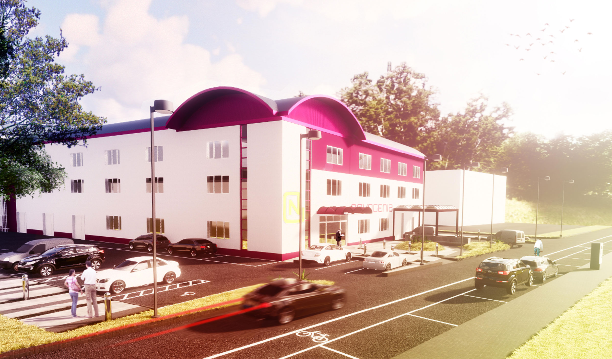

Laboratory Landscape
Year | 2018 | Competition
Type | Landscape

Displaying minimal design additions within a simple, low maintenance and rigid layout that enables efficiency and functionality for the users.

The main materials used are concrete and stone tiles with black gravel where the bollard lights stand. A couple of snake plants (Sansevieria trifasciata) were used with stones, rocks and boulders. A solid concrete bench was implemented in the design to act as a meeting point.